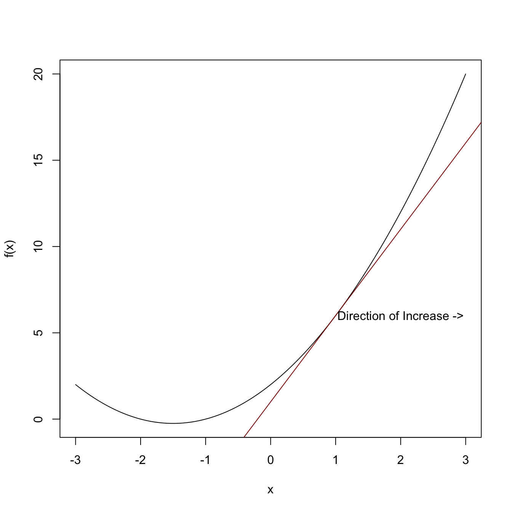
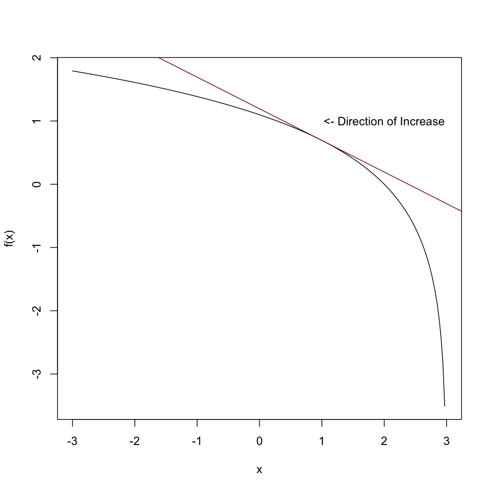
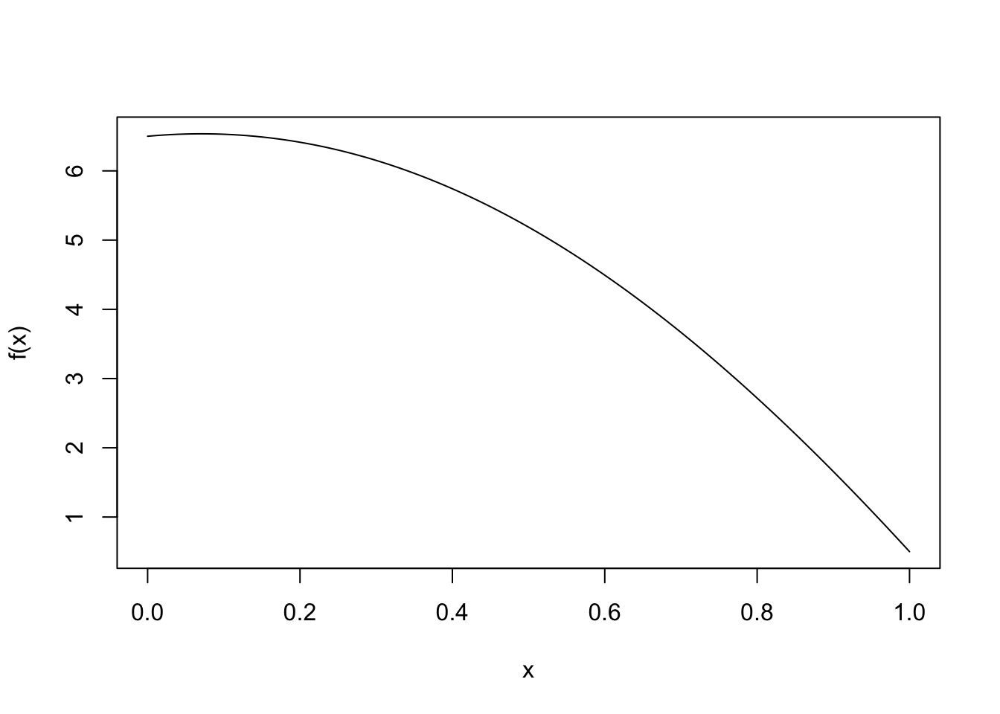
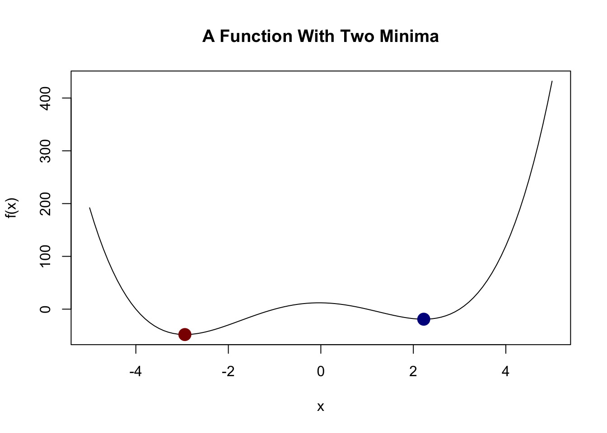
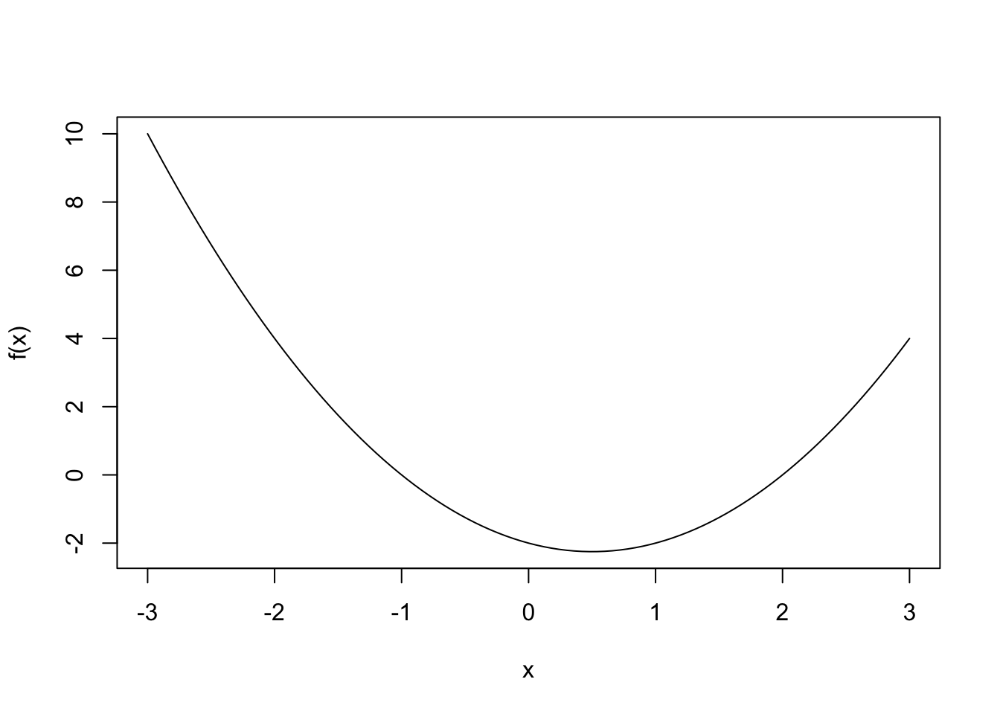
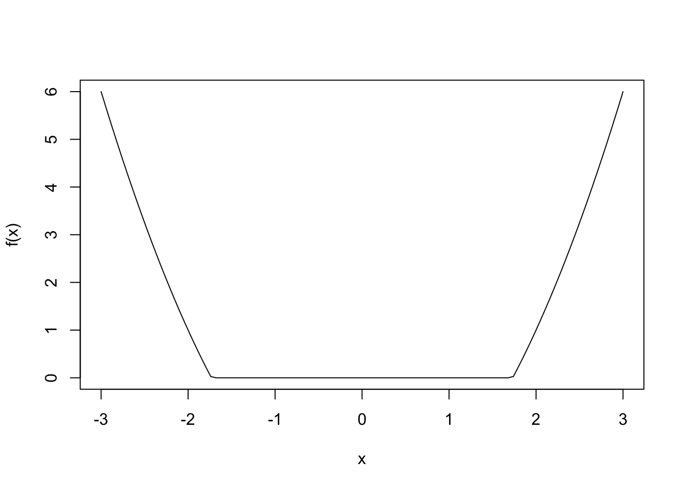
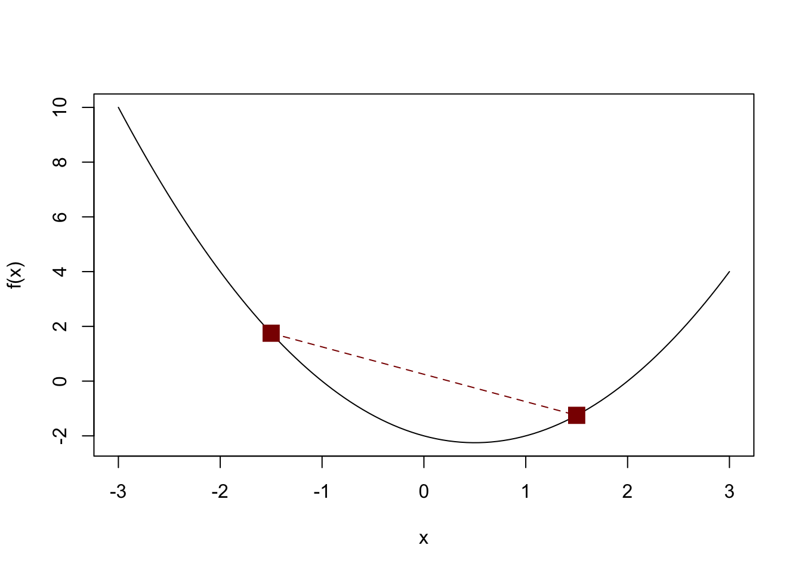

Notes for Lecture #06: Unit I. ML Fundamentals: A Friendly Foray into First Order Optimization: SGD and Friends
Outline:
So far, we have talked mainly talked about models and different aspects of understanding predictive performance (in/out-of-sample, test/train, decomposing error into sources). Throughout all of this, we’ve repeatedly made reference to the empirical risk minimizer:
\[\hat{f} = \argmin_{f \in \Fcal} \frac{1}{n}\sum_{i=1}^n L(f(\bX_i), Y_i) \tag{ERM}\]
Today, our focus is on actually solving the ERM problem. This can get quite technical, so we’re just going to work on building the intuition for how one could solve this type of problem.
The first-and most important-thing to note is that the ERM problem essentially never has a simple closed form solution: OLS (and some close cousins) are a notable exception. Even something as simple and familiar as logistic regression requires us to adopt an alternative approach.
To keep our notation simple, let’s rewrite the ERM problem as a special case of a more general problem:
\[x_* = \argmin_{x \in \Ccal} f(x)\]
That is, we want to find the value(s) of \(x\) that make \(f(\cdot)\) as small as possible. Obviously this formulation captures ERM, but it also includes problems in applied math as vast as transportation planning (minimize fuel usage), economic decision making (minimize costs associated with a complex decision), classical statistics (minimize missfit between a model and some observed data) and many others. The function \(f\) is called the objective. Note that we’re not loosing anything by focusing on minimizing the objective. It’s easy to see that
\[\argmin_{x \in \Ccal} f(x) \Leftrightarrow \argmax_{x \in \Ccal} -f(x)\]
The requirement \(x \in \Ccal\) is intentionally quite vague: we’re simply requiring \(x\) to live in some set, traditionally known as a constraint set. In the simplest problems, \(\Ccal\) is all vectors (all possible combinations of real numbers) and we say the problem is unconstrained. In other problems, we might use \(\Ccal\) to impose constraints that make a solution workable - we minimize fuel cost subject to actually getting to our destination and we minimize costs associated with a complex decision subject to contracts we have negotiated in the past.
In ML, we rarely have these types of hard domain-specific constraints, but we will want to use the constraint set to nudge our answers in a particular direction. (We will return to this when we talk about regularization in Unit II.)
For now, let’s assume we have no constraints, so we are just solving
\[\argmin_{x \in \R^p} f(x)\]
Why Not Grid Search?
Unconstrained Optimization via Gradient Descent
All of modern ML optimization relies on one remarkable fact from elementary calculus: the derivative points the way.
Let’s go back to basics: essentially all functions in ML take in several inputs (parameters) and produce a single output. Formally,
\[ f: \R^p \to \R\]
The relevant notion of derivative for this type of ‘scalar-valued’ function \(f\) is the gradient: the gradient, which we denote \(\nabla f\) is a vector of derivatives. If we think about a two-input function \(g(x, y)\), its gradient is the vector given by
\[\left(\frac{\partial g}{\partial x}, \frac{\partial g}{\partial y}\right)\]
That is, we take the derivative with respect to each input one at a time and join them into a vector. Why is this useful?
Remember how a vector works in simple single-variable calculus: it is positive if the function is increasing at a point and negative if the function is decreasing. Another way to say this is: “the derivative is positive if moving in the positive direction (rightwards) makes \(f\) go up and the derivative is negative if moving in the negative direction (leftwards) makes \(f\) go up.”
Visually,
and

This suggests an approach we can use to find the minimum of any function:
- Given a starting point \(x_0\):
- Repeat until the minimum is found:
- Compute the derivative \(f'(x_k)\)
- If positive, shift a bit to the left \(x_{k+1} = x_k - \epsilon\) If negative, shift a bit to the right \(x_{k+1} = x_k + \epsilon\)
We can repeat this simple loop and eventually run into a minimum of the function. Visually, suppose we want to find the minimum of this function:
f <- function(x) (x + 2) * (x + 1) * (x - 1) * (x - 3) + 0.5
curve(f)
Let’s start at \(x = 0\) and see what happens:
# TODOThis algorithm can be generalized to give us the general strategy of gradient-descent: we repeat the following loop until we reach a minimum:
\[x^{(k+1)} \leftarrow x^{(k)} - c_k \nabla f(x^{(k)})\]
Notably, when the derivative is zero \(\nabla f = \bzero\) we stop. (Check why.)
Aside: If we were maximizing, we would have \(x^{(k)} + c_k \nabla f\). Why?
This strategy has several very nice properties:
- It gives us a natural stopping rule, at least in theory, of \(\nabla f = \bzero\). In practice, getting an exact zero is very hard, so we typically stop when \(\nabla f \approx \bzero\) or when \(f(x^{(k+1)}) \approx f(x^{(k)})\)
- As long as the step size \(c_k\) is chosen small enough, we always are going to go downhill (\(f\) decreases).
- We don’t need any global information. We only need the gradient at one point at a time. We sometimes say we only need a first-order oracle. We don’t really need to know the function \(\nabla f\): we only need to be able to evaluate it. For very complex functions, this turns out to be a real practical advantage as we will discuss below.
This last point is a bit of a double edged sword: gradient descent will help us find a point where \(\nabla f \approx \bzero\), but this only guarantees us a a local minimum (or possibly even just a critical point). There may be a better solution farther away that we don’t see. E.g.,

Here, we see that we have the minimizer, also called the global minimizer at the red dot as well as a local minimizer at the blue dot. If we start GD around the blue dot, we will ‘fall down’ into that valley and converge to the blue dot, but we will never get to the true global minimizer. GD cannot easily escape this sort of trap because it only looks at the derivative around the blue dot and there is no local direction to go downwards.
Learning Rates
In our basic GD update
[x^{(k+1)} x^{(k)} - c_k f(x^{(k)})]
what role is played by the value \(c_k\)? We haven’t really talked about it so far.
\(c_k\) is known as the step-size (in general optimization theory) or the learning rate (in ML). It controls how fast we go in GD. If we pick a larger \(c_k\), we take proportionally larger steps.
Big steps seem great - they will help us get to our destination (minimizer) more quickly. And sometimes they will. But they pose a bit of a risk. If our step size is too large, we can ‘step over’ the minimum.
Take a very simple example: minimizing \(f(x) = x^2\), where the answer is clearly \(x = 0\) and we have \(f'(x) = 2x\). If we start at \(x^{(0)} = -2\) and take a simple step size of \(c_k = 1\), we will just have:
\[\begin{align*} x^{(0)} &= -2 x^{(1)} &= x^{(0)} - c_k f'(x^{(0)}) \\ &= -2 - 1 * (2 * (-2)) \\ &= 2 \\ x^{(2)} &= x^{(1)} - c_k f'(x^{(1)}) \\ &= 2 - 1 * (2 * 2) \\ &= -2 x^{(3)} &= x^{(2)} - c_k f'(x^{(2)}) \\ &= -2 - 1 * (2 * (-2)) \\ &= 2 \dots &= \dots \end{align*}\]
and we will ‘ping-pong’ back and forth forever. This example is a bit contrived and a perfect cycle is pretty rare, but the general phenomenon of bouncing around ‘above’ the valley certainly happens.
So what can we do? The simplest choice might be to set \(c_k\) to some small value, but this comes with its own costs. We can take smaller steps, but we will then need many more to get to our minimizer.
One simple strategy is to have \(c_k\) not be constant, but to instead have it decay in \(k\): that is, to have the step sizes get smaller as we go on. A simple choice might be \(c_k = 1/k\). We start with a bit step \(c_1 = 1\), but our next step is half-sized \(c_2 = 1/2\) and so forth. Our hope here is to take an initial few large steps to get us close to the minimizer and then to ‘fine-tune’ our way to the actual minimizer with smaller steps.
This does work, but it can be a bit finicky. If we have \(c_k\) decay too quickly, we get ourselves back to the small-steps / many-steps problem (even more so if \(c_k\) gets very small); but if \(c_k\) decays too slowly, we can waste a lot of time ping-ponging.
This motivates a huge variety of different procedures for picking \(c_k\) and much of applied ML research revolves around coming up with new variants. This is one of those parts of ML where a 0.01% improvement can be worth billions of dollars because it makes every training step more efficient.
Generally, rules for picking \(c_k\) fall into two camps:
- Momentum: if we have taken several steps in the same direction, we should assume we want to keep going in that direction and keep our step size large.
- Adaptivity: if the function is changing slowly, we are in a ‘flat region’ and probably want to take big steps; if it is changing quickly, we want to slow down so we don’t over step. This is particularly useful so that we can adapt to the type of function as opposed to having to know up front whether it is a ‘big step’ or ‘small step’ function.
I like to think of these as how one might descend a mountain. In the flat parts, we can take big steps without any fear; in the steep parts, we take smaller steps so we don’t fall flat on our face.
Modern ML optimization methods combine these two ideas - and several others - to try to make sure that we are always taking large, but not too large, steps in a useful direction. It’s a bit dated now, but for many years the Adam optimizer dominated this space, as it was one of the first to combine Adaptivity and Momentum in an easy to use package.
AutoDiff
So we know we can use a learning rate given to use using an Adam-type rule in our GD update:
[x^{(k+1)} x^{(k)} - c_k f(x^{(k)})]
We’re still left with one very painful chore: computing the gradient \(\nabla f\) at each step. Recall that our goal was to not have to evaluate \(f\) too many times and now we’re asking for a derivative.
We have two obvious ways of doing this, both of which stink:
Actually do the symbolic calculation of computing \(\nabla f\),
i.e., do some calculus by hand. This works for toy problems (as shown above), but it’s a huge pain for realistic models. In many circumstances, we don’t even have \(f\) as a single formula so differentiating it manually is going to be ludicrously terrible.-
Using a difference quotient. You might remember from calculus that
\[f'(x) = \lim_{\Delta x \to 0} \frac{f(x + \Delta x) - f(x)}{\Delta x}\]
So, if we can’t find \(f'\) directly, if we compute \(f\) twice at slightly different values of \(x\), we can get an approximate (numerical) derivative. This is a reasonable strategy in one-dimension, but it doesn’t scale up to big complex models.
Recall that \(\nabla f\) is the derivative in all \(p\)-dimensions, so we would need to evaluate \(f\) \(p+1\) times to get a single derivative. At this point, we’re starting to get back into the grid search scale of evaluating \(f\).
A remarkable idea lets us get around this: at the end of the day, computers can only do a few very simple operations:
- They can add and subtract
- They can multiply and divide
- They can call other functions
Everything else is built out of these: if we compute a least squares loss, there’s a bunch of matrix multiplications, squaring, and summing, but these are just the same basic parts. Moving to a more complex loss, say one with a logarithm, might seem tricky, but under the hood, computers just use a power series to compute a logarithm anyways. There is no logarithm-unit in hardware.
But these are all things where we understand the derivative well. From Calculus I:
\[\begin{align*} (f + g)' = f' + g' \\ (f*g)' &= f'*g + f * g' \\ (f \circ g)' &= f'(g) * g' \end{align*}\]
If any compute program is built out of these pieces - admittedly at enormous scale - can’t we just use them to compute the derivative? In fact, we can, with lots of book-keeping. But book-keeping is the sort of things computers are great at!
This gives rise to automatic-differentiation or auto-diff. (Sometimes also called back-propagation or back-prop in reference to the core book-keeping algorithm.) Auto-diff is the backbone of most modern ML toolkits: we simply code up \(f\) and through the magic of auto-diff, we get the ability to execute \(\nabla f\) ‘for free’.1
To wit: taking
\[f(x) = (x - 3) * (x-1) * (x + 1) * (x+4)\]
import jax
def f(x):
return (x - 3) * (x - 1) * (x + 1) * (x + 4)
x = 2.0
# --------------------------------------------------
# 1. Using jax.grad:
# Requires calling f(x) and df(x) separately
# --------------------------------------------------
df = jax.grad(f)
val = f(x)
grad = df(x)
print("jax.grad:")jax.grad:print(f" f({x}) = {val}") f(2.0) = -18.0print(f" f'({x}) = {grad}\n") f'(2.0) = -9.0# --------------------------------------------------
# 2. Using jax.value_and_grad:
# Computes both in a single call
# --------------------------------------------------
f_and_df = jax.value_and_grad(f)
val, grad = f_and_df(x)
print("jax.value_and_grad:")jax.value_and_grad:print(f" f({x}) = {val}") f(2.0) = -18.0print(f" f'({x}) = {grad}") f'(2.0) = -9.0Here, we see that we can either just use jax.grad to automatically create a new derivative function or we can even use jax.value_and_grad to get them both at once. In both cases, \(f\) is the input and we get back a new function which is then later evaluated at a point.
We can use this to create a simple gradient descent loop:
import jax
import jax.numpy as jnp
def f(x):
return (x - 3) * (x - 1) * (x + 1) * (x + 4)
class GradientDescentUpdate:
def __init__(self, objective, init_x, learning_rate):
self.learning_rate = learning_rate
self.x = jnp.array(init_x, dtype=jnp.float32)
self.grad_fn = jax.grad(objective)
def step(self):
grad = self.grad_fn(self.x)
self.x = self.x - self.learning_rate * grad
return float(self.x), float(grad)
initial_x = -4.0
opt = GradientDescentUpdate(
objective=f,
init_x=initial_x,
learning_rate=0.0001 # Need this to be _very_ small since not changing!
)
# Outer loop managed explicitly by caller
num_steps = 50
tol = 1e-5
old_x_val = initial_x
for step in range(num_steps):
new_x_val, grad = opt.step()
print("Updated x to")
print(new_x_val)
if abs(grad) < tol or abs(new_x_val - old_x_val) < tol:
print(f"Converged at step {step}")
break
old_x_val = new_x_valUpdated x to
-3.989500045776367
Updated x to
-3.9791486263275146
Updated x to
-3.968942642211914
Updated x to
-3.958879232406616
Updated x to
-3.948955535888672
Updated x to
-3.939168691635132
Updated x to
-3.929515838623047
Updated x to
-3.919994592666626
Updated x to
-3.91060209274292
Updated x to
-3.9013359546661377
Updated x to
-3.892193555831909
Updated x to
-3.8831725120544434
Updated x to
-3.8742706775665283
Updated x to
-3.865485668182373
Updated x to
-3.8568153381347656
Updated x to
-3.848257541656494
Updated x to
-3.8398101329803467
Updated x to
-3.8314709663391113
Updated x to
-3.8232381343841553
Updated x to
-3.8151097297668457
Updated x to
-3.80708384513855
Updated x to
-3.7991585731506348
Updated x to
-3.791332244873047
Updated x to
-3.7836029529571533
Updated x to
-3.7759690284729004
Updated x to
-3.7684288024902344
Updated x to
-3.7609808444976807
Updated x to
-3.7536232471466064
Updated x to
-3.746354579925537
Updated x to
-3.739173412322998
Updated x to
-3.7320780754089355
Updated x to
-3.725067138671875
Updated x to
-3.718139410018921
Updated x to
-3.7112932205200195
Updated x to
-3.7045273780822754
Updated x to
-3.697840452194214
Updated x to
-3.6912312507629395
Updated x to
-3.6846985816955566
Updated x to
-3.678241014480591
Updated x to
-3.6718573570251465
Updated x to
-3.6655466556549072
Updated x to
-3.6593074798583984
Updated x to
-3.6531388759613037
Updated x to
-3.6470396518707275
Updated x to
-3.6410086154937744
Updated x to
-3.635044813156128
Updated x to
-3.6291472911834717
Updated x to
-3.62331485748291
Updated x to
-3.617546558380127
Updated x to
-3.6118414402008057print(f"Final x: {float(opt.x):.4f}")Final x: -3.6118print(f"Objective value: {f(opt.x):.4f}")Objective value: -30.9138Ok - not exactly correct and maybe a bit clunky - but this basically worked! There is a minimum at \(x=-4\) and we got pretty darn close.
Convexity
So returning to our example from above, how can we guarantee that we get the global optimum (red dot) instead of just a local optimum (blue dot)? Looking at the basic GD structure, it’s clear that if we start sufficiently near the global optimum, we’ll find it, but it’s not at all obvious how near is near enough or how we can ever be sure.
This is a really hard problem in general, but there are a useful class of functions where we can be guaranteed to get the global minimum. Before saying how, it’s important to pause and ask why it may (or may not) be important to get the global minimum.
- To an academic, much of our theory applies to the global minimum. Whether this is important or not depends on how much you value theory.
- There is a reproducibility argument: if we always get the global minimum, then choices like learning rate or starting point don’t matter, which is great. (Good life advice: it’s best if hard choices don’t actually change the outcome.)
- There is also a ‘statistical’ stability argument. If we think of minimizing a loss function based on noisy data, it’s probably a good thing if the minimizer doesn’t move very much. If there are multiple minimizers (as in our blue/red example above), a small change in the function can totally change the location of the global minimizer; this might render our models unstable or unpredictable.
So how can we guarantee this sort of global optimality. Well, like most things in math, we cheat a bit: specifically, we just assume that all local minima are global minima. Of course, we’re not so explicit about that. We instead say that we are guaranteed to get the global minimizer if \(f\) is convex, i.e., bowl shaped.
For a convex function like:

There is only one minimizer and it is both local and global. So finding a local minimizer means we are guaranteed to get a global minimizer.
Not all convex functions have a single minimizer:

Here we have many minimizers (that whole flat region), but they are all giving the global optimum (\(f_* = 0\)).
Formally, a function \(f\) is convex if:
\[f(\lambda x + (1 - \lambda)y) \leq \lambda \lambda f(x) + (1 - \lambda) f(y) \text{ for any } \lambda \in [0, 1]\]
That’s a bit formal, but what does it mean. It means that if we pick any two points \(x, y\) and draw the line connecting them (\(lambda f(x) + (1 - \lambda) f(y)\)), \(f\) lies below it
In our example above:

TODO: Why does this guarantee optimization will work nicely? Given two guesses, we can get a better guess by looking between them.
Stochastic Gradient Descent
Zeroth Order Optimization
Footnotes
Not entirely for free because we do have the book-keeping steps, but when done smartly, this can be something like 8-10x as slow as just computing \(f\). Certainly not nothing, but much better than computing \(f\) \(p\) different times in a \(p = 10^8\) parameter model.↩︎